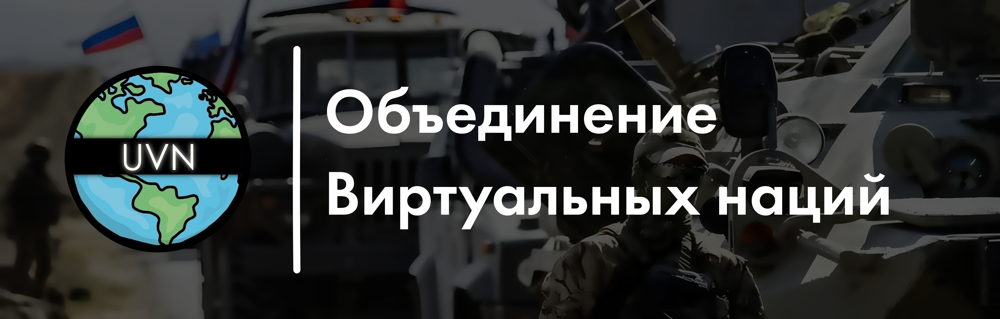
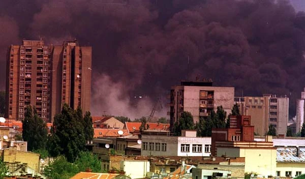
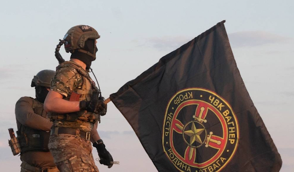
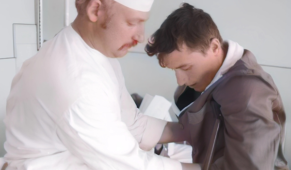

Объединение Виртуальных Наций (ОВН, англ. United Virtual Nations) — международная виртуальная организация. ОВН был создан для объединения множества стран со своей историей, политикой и событиями, а также развития сотрудничества между виртуальными государствами. Данный проект ни в коем случае не является поддержкой сепаратистских образований, «виртуальные государства» для нас — выдуманные государства, находящиеся на просторе сети ВКонтакте
ОВН был создана 6 февраля 2022 года в качестве альтернативы Организации Объединённых Виртуальных Государств. Первое глобальное расширение ОВН в июле 2022 года произошло после самой острой фазы кризиса в ООВГ. К концу 2022 года большая часть основных стран ООВГ перешли в ОВН.
Объединение Виртуальных Наций — это политико-экономическая симуляция современного мира на рубеже 2025 года. Участники управляют государствами, принимая решения, формирующие их курс в условиях глобальной нестабильности.
Вы формируете курс своей нации: от налоговой политики до внешних отношений. ОВН предоставляет широкие полномочия и механизмы принятия решений в пределах реалистичных рамок.
Проект исключает фантастику и отклонения от действительности.
Заключайте соглашения, участвуйте в переговорах, вступайте в блоки — от торговых до оборонных. ОВН моделирует современные международные отношения.
Проект развивает стратегическое мышление, политическую грамотность, способности к переговорам и антикризисному управлению.
Вы будете работать с актуальными темами: санкциями, экономическими реформами, цифровизацией, демографическими вызовами и региональными конфликтами.
Администрация ОВН обеспечивает соблюдение регламентов, оперативно реагирует на обращения и поддерживает честную игровую среду.
Функциональный сайт упрощает управление страной, взаимодействие с другими участниками и автоматизирует ключевые процессы.


